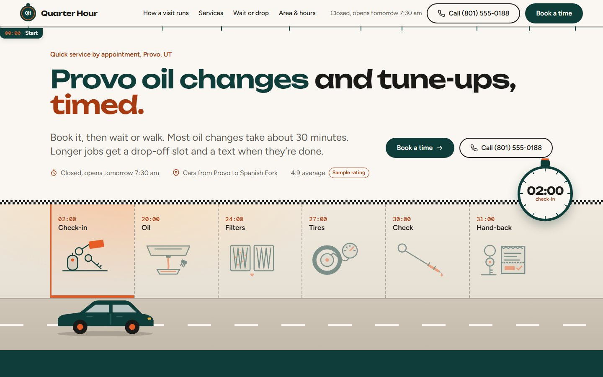
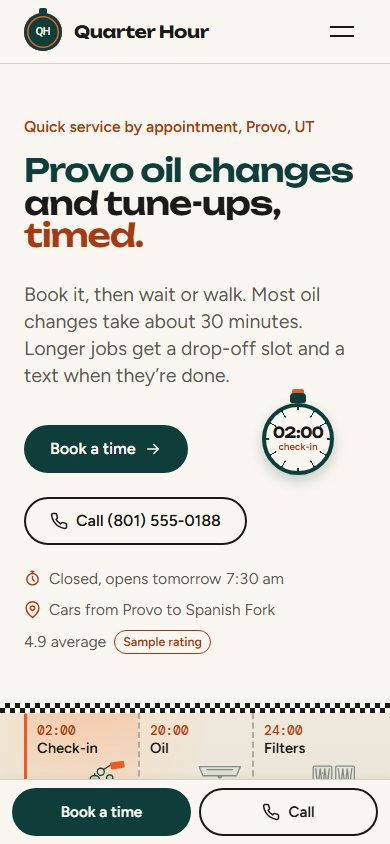

A
Quarter Hour Tune-Up
9.07Auto Tune Up · Provo, UT
Signature Stopwatch Stations
The page is the relay board: each section is a station on a timed course, and the running stopwatch total proves speed without promising what isn't true.
Open site for Quarter Hour Tune-Up
autotuneup-A